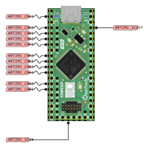
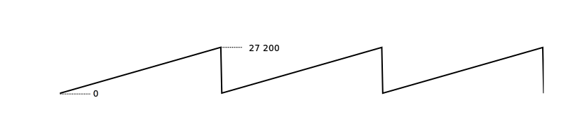
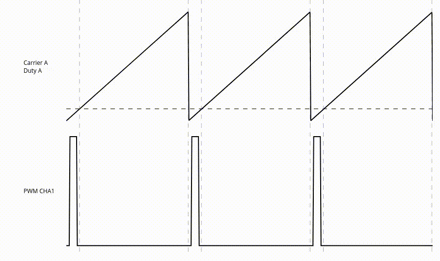

PWM, or Pulse Width Modulation, is a method used in electronics to control the power supplied to devices like motors, LEDs, and heaters. Instead of changing the voltage or current level, PWM changes the amount of time the power is on (the pulse width) compared to the time it's off.
In power electronics, PWM is super important because it allows us to control the average power delivered to a load by varying the duty cycle of the pulse. This means we can regulate the speed of motors or the brightness of LEDs.
Features

- Up to 5 pairs of PWMs possible (PWMA, PWC, PWMD, PWME, PWMF)
- Each PWM unit has a resolution of 184ps.
Note
The resolution of a PWM signal defines the maximum number of steps that can be present in a single PWM period. In other words, it determines how finely you can adjust the pulse width of the signal. A higher resolution means you can make smaller and more precise adjustments to the pulse width.
- Frequencies in the range of 650Hz to 1Ghz theorically possible
Warning
Only 200Khz was tested with SPIN and TWIST
- Two different modulation mode possible : left aligned, and center aligned
- Two ADC linkable to two differents PWM unit for precise measurement instant
- Compatible for peak current control with the internal analog comparator
- Positive and negative dead time set via software
- Phase shift possible for interleaved operations
Include
Initialization sequence
Note
Function to call before initializing the PWM unit.
1. Set the modulation type : spin.pwm.setModulation(PWMx, lft_aligned/upDwn)
2. Set wich output (1 or 2) will be controlled by the duty cycle, the other will be complementary spin.pwm.setSwitchConvention(PWMx, PWMx1/PWMx2)
3. Set if the pwm is designed to be duty-cycle driven (voltage mode) or current driven (current mode) spin.pwm.setMode(PWMx, voltageMode/currentMode)
4. Initialize the pwm unit : spin.pwm.initUnit(PWMx)
1. Set the modulation type : spin.pwm.setModulation(PWMx, lft_aligned/upDwn)
2. Set ow which edge (up/down) to trigger adc conversion spin.pwm.setAdcEdgeTrigger(PWMx, edgeTrigUp/edgeTrigDwn)
3. Set the division of the number of trigger in a fixed period spin.pwm.setAdcDecimation(PWMx, DecimValue)
4. Set wich output (1 or 2) will be constrolled by the duty cycle, the other will be complementary spin.pwm.setSwitchConvention(PWMx, PWMx1/PWMx2)
5. Set if the pwm is designed to be duty-cycle driven (voltage mode) or current driven (current mode) spin.pwm.setMode(PWMx, voltageMode/currentMode)
6. Initialize the pwm unit : spin.pwm.initUnit(PWMx)
Note
Function to call after initializing PWM unit.
- Set the rising/falling dead time. Can be changed before/after init :
spin.pwm.setDeadTime(PWMx, rise, fall) - Set an initial value for the duty cycle
spin.pwm.setDutyCycle(0.5) - Start the PWM, either start both outout or just one
spin.pwm.startDualOutput(PWMx)/spin.pwm.startSingleOutput(PWMx, PWMx1/PWMx2) - if ADC hardware triggered : follow ADC init sequence
- Set the rising/falling dead time. Can be changed before/after init :
spin.pwm.setDeadTime(PWMx, rise, fall) - Set wich ADC trigger to link to PWM unit
spin.pwm.setAdcTrigger(PWMx, ADCtrig) - Enable the adc trigger
spin.pwm.enableAdcTrigger - Set an initial value for the duty cycle
spin.pwm.setDutyCycle(0.5) - Start the PWM, either start both outout or just one
spin.pwm.startDualOutput(PWMx)/spin.pwm.startSingleOutput(PWMx, PWMx1/PWMx2) - if ADC hardware triggered : follow ADC init sequence
Example
spin.pwm.setModulation(PWMA, UpDwn);
spin.pwm.setAdcEdgeTrigger(PWMA, EdgeTrigger_up);
spin.pwm.setSwitchConvention(PWMA, PWMx1);
spin.pwm.setAdcDecimation(PWMA, 1);
spin.pwm.setMode(PWMA, VOLTAGE_MODE);
spin.pwm.initUnit(PWMA);
spin.pwm.setDeadTime(PWMA, 200,200);
spin.pwm.setAdcTrigger(PWMA, ADCTRIG_1);
spin.pwm.enableAdcTrigger(PWMA);
spin.pwm.setDutyCycle(0.5);
spin.pwm.startDualOutput(PWMA);
How it works
To generate a PWM you need two signals, a variable high frequency signals called the carrier and a constant signal called the duty cycle.
Carrier signal and PWM resolution
The carrier signal is usually a counter in the form of a sawtooth or triangle wave. The frequency of the PWM is given by the max value of that counter. It means that the minimal duty cycle step of phase step, is proportional to the frequency of the signal.
Example
Here is a counter incrementing from 0 to 27200. 
The increment between each step is made at the PWM resolution which is here 184ps, so the carrier gets from 0 to 27200 in 5µs so a frequency of 200kHz.
In other words the smallest step is 1/27200 or 0.0037% of the period.
Duty cycle
The duty cycle is a constant value compared to the carrier.

When the carrier is superior to the duty cycle, the logic output is at high level. On the contrary, when the carrier is inferior to the duty cycle the the output logic is low level. A PWM signal is thus a sqarewave signal with a frequency (the switching frequency) is fixed by the carrier.
Varying the duty cycle is how to vary the output of the PWM.
Snippet examples
Frequency
Single/Dual Output
Duty Cycle
Phase Shift
Tip
PWMA is defined as the phase reference. It can not be phase shifted.
If you are not using PWMA, you can define any PWM channel as the reference by setting its phase shift to 0°
NB: Phase reference is 0°.
Dead Time
Modulation Type
Example
See this examples for more details :
Class PwmHAL
Handles all pwm signals for the spin board. More...
#include <PwmHAL.h>
Public Functions
| Type | Name |
|---|---|
| void | configurePeriodEvnt (hrtim_tu_t PWM_tu, uint32_t repetition, hrtim_callback_t callback) This function configures the interrupt on repetition counter. |
| void | disableAdcTrigger (hrtim_tu_number_t tu_number) This function disables the adc trigger for the selected timing unit. |
| void | disablePeriodEvnt (hrtim_tu_t PWM_tu) This function disables the interrupt on repetition counter. |
| void | enableAdcTrigger (hrtim_tu_number_t tu_number) This function enables the adc trigger for the selected timing unit. |
| void | enablePeriodEvnt (hrtim_tu_t PWM_tu) This function enables the interrupt on repetition counter. |
| hrtim_adc_edgetrigger_t | getAdcEdgeTrigger (hrtim_tu_number_t pwmX) This function returns the adc trigger rollover mode for the selected timer. |
| hrtim_adc_trigger_t | getAdcTrigger (hrtim_tu_number_t pwmX, hrtim_adc_trigger_t adc_trig) This function returns the adc trigger linked to a timer unit. |
| hrtim_external_trigger_t | getEev (hrtim_tu_number_t pwmX) This function sets the external event linked to the timing unit used for the current mode. |
| hrtim_pwm_mode_t | getMode (hrtim_tu_number_t pwmX) This function returns the PWM mode (voltage or current mode) |
| hrtim_cnt_t | getModulation (hrtim_tu_number_t pwmX) This function returns the modulation type of the selected timing unit. |
| uint16_t | getPeriod (hrtim_tu_number_t pwmX) This function returns the period of the selected timing unit. |
| uint32_t | getPeriodEvntRep (hrtim_tu_t PWM_tu) This function returns the repetition counter value. |
| uint32_t | getPeriodUs (hrtim_tu_number_t pwmX) This function returns the period in µs of the selected timer. |
| hrtim_switch_convention_t | getSwitchConvention (hrtim_tu_number_t pwmX) This function returns the switching convention of the selected timing unit. |
| void | initFrequency (uint32_t init_frequency) This function initialize the frequency. |
| void | initFrequency (uint32_t init_frequency, uint32_t minimal_frequency) This functions initialize the frequency and also sets the minimal reachable frequency. |
| void | initUnit (hrtim_tu_number_t pwmX) This function initializes a timing unit. |
| void | setAdcDecimation (hrtim_tu_number_t pwmX, uint32_t decimation) This function sets the number of event which will be ignored between two events. ie. you divide the number of trigger in a fixed period. For example if decimation = 1, nothing changes but with decimation = 2 you have twice less adc trigger. |
| void | setAdcEdgeTrigger (hrtim_tu_number_t pwmX, hrtim_adc_edgetrigger_t adc_edge_trigger) This function sets the adc trig rollover mode for the selected timer. |
| void | setAdcTrigger (hrtim_tu_number_t pwmX, hrtim_adc_trigger_t adc_trig) This function sets the adc trigger linked to a timer unit. |
| void | setAdcTriggerInstant (hrtim_tu_number_t pwmX, float32_t trig_val) This function sets the comparator value at which the ADC is trigered. |
| void | setAdcTriggerPostScaler (hrtim_tu_number_t pwmX, uint32_t ps_ratio) This function sets the PostScaler value for the selected timing unit. |
| void | setDeadTime (hrtim_tu_number_t pwmX, uint16_t rise_ns, uint16_t fall_ns) This function sets the dead time for the selected timing unit. |
| void | setDutyCycle (hrtim_tu_number_t pwmX, float32_t duty_cycle) This function sets the duty cycle for the selected timing unit. |
| void | setEev (hrtim_tu_number_t pwmX, hrtim_external_trigger_t eev) This function sets external event linked to the timing unit essential for the current mode. |
| void | setFrequency (uint32_t frequency_update) Change the frequency/period after it has been initialized. |
| void | setMode (hrtim_tu_number_t pwmX, hrtim_pwm_mode_t mode) This function sets a special pwm mode for voltage or current mode. |
| void | setModulation (hrtim_tu_number_t pwmX, hrtim_cnt_t modulation) This function sets the modulation mode for a given PWM unit. |
| void | setPeriodEvntRep (hrtim_tu_t PWM_tu, uint32_t repetition) This function sets the repetition counter to ISR period. |
| void | setPhaseShift (hrtim_tu_number_t pwmX, int16_t shift) This function sets the phase shift in respect to timer A for the selected timing unit. |
| void | setSwitchConvention (hrtim_tu_number_t pwmX, hrtim_switch_convention_t convention) This function sets the switch convention for a given PWM unit i.e. you decide which one of the output of the timer can be controlled with duty cycle. |
| void | startDualOutput (hrtim_tu_number_t pwmX) This fonction starts both outputs of the selected HRTIM channel. |
| void | startSingleOutput (hrtim_tu_number_t tu, hrtim_output_number_t output) This function starts only one output of the selected HRTIM channel. |
| void | stopDualOutput (hrtim_tu_number_t pwmX) This function stops both outputs of the selected HRTIM channel. |
| void | stopSingleOutput (hrtim_tu_number_t tu, hrtim_output_number_t output) This function starts only one output of the selected HRTIM channel. |
Detailed Description
Note:
Use this element to call functions related to the pwm.
Public Functions Documentation
function configurePeriodEvnt
This function configures the interrupt on repetition counter.
void PwmHAL::configurePeriodEvnt (
hrtim_tu_t PWM_tu,
uint32_t repetition,
hrtim_callback_t callback
)
Parameters:
PWM_tuPWM Unit - TIMA, TIMB, TIMC, TIMD, TIME or TIMFrepetitionnumber of repetition before the interruption on repetition counter eventcallbackfunction to call each interupt
function disableAdcTrigger
This function disables the adc trigger for the selected timing unit.
Parameters:
pwmXPWM Unit - PWMA, PWMB, PWMC, PWMD, PWME or PWMF
function disablePeriodEvnt
This function disables the interrupt on repetition counter.
Parameters:
PWM_tuPWM Unit - TIMA, TIMB, TIMC, TIMD, TIME or TIMF
function enableAdcTrigger
This function enables the adc trigger for the selected timing unit.
Parameters:
pwmXPWM Unit - PWMA, PWMB, PWMC, PWMD, PWME or PWMF
Warning:
call this function only AFTER setting the adc trigger and initializing the chosen timer
function enablePeriodEvnt
This function enables the interrupt on repetition counter.
Parameters:
PWM_tuPWM Unit - TIMA, TIMB, TIMC, TIMD, TIME or TIMF
function getAdcEdgeTrigger
This function returns the adc trigger rollover mode for the selected timer.
Parameters:
pwmXPWM Unit - PWMA, PWMB, PWMC, PWMD, PWME or PWMF
Returns:
Rollover mode - EdgeTrigger_up, EdgeTrigger_down, EdgeTrigger_Both
function getAdcTrigger
This function returns the adc trigger linked to a timer unit.
Parameters:
pwmXPWM Unit - PWMA, PWMB, PWMC, PWMD, PWME or PWMF
Returns:
adc trigger - ADCTRIG_1, ADCTRIG_2, ADCTRIG_3 et ADCTRIG_4
function getEev
This function sets the external event linked to the timing unit used for the current mode.
Parameters:
pwmXPWM Unit - PWMA, PWMB, PWMC, PWMD, PWME or PWMF
Returns:
external event trigger - EEV1,EEV2, EEV3, EEV3, EEV4, EEV5, EEV6, EEV7, EEV8, EEV9
function getMode
This function returns the PWM mode (voltage or current mode)
Parameters:
pwmXPWM Unit - PWMA, PWMB, PWMC, PWMD, PWME or PWMF
Returns:
PWM mode - VOLTAGE_MODE or CURRENT_MODE
Warning:
this function must be called before initialiazing a timing unit
function getModulation
This function returns the modulation type of the selected timing unit.
Parameters:
pwmXPWM Unit - PWMA, PWMB, PWMC, PWMD, PWME or PWMF
Returns:
Lft_aligned or UpDwn (center aligned)
function getPeriod
This function returns the period of the selected timing unit.
Parameters:
pwmXPWM Unit - PWMA, PWMB, PWMC, PWMD, PWME or PWMF
Returns:
the period value in uint16
function getPeriodEvntRep
This function returns the repetition counter value.
Parameters:
PWM_tuPWM Unit - TIMA, TIMB, TIMC, TIMD, TIME or TIMF
Returns:
repetition counter value
function getPeriodUs
This function returns the period in µs of the selected timer.
Parameters:
pwmXPWM Unit - PWMA, PWMB, PWMC, PWMD, PWME or PWMF
function getSwitchConvention
This function returns the switching convention of the selected timing unit.
Parameters:
pwmXPWM Unit - PWMA, PWMB, PWMC, PWMD, PWME or PWMF
Returns:
PWMx1 (high side convention) or PWMx2 (low-side convention)
function initFrequency [1/2]
This function initialize the frequency.
Parameters:
init_frequencyfrequency in Hz
Warning:
this function must be called BEFORE initialiazing any timing unit. the frequency initialized becomes the MINIMUM possible. use it BEFORE initialization of the timing unit.
function initFrequency [2/2]
This functions initialize the frequency and also sets the minimal reachable frequency.
Parameters:
init_frequencyfrequency in Hzminimal_frequencydesired minimal frequency in Hz
Warning:
this function must be called BEFORE initialiazing any timing unit
function initUnit
This function initializes a timing unit.
Parameters:
pwmXPWM Unit - PWMA, PWMB, PWMC, PWMD, PWME or PWMF
Date:
2023
Author:
Luiz Villa luiz.villa@laas.fr
Author:
Clément Foucher clement.foucher@laas.fr
Author:
Ayoub Farah Hassan ayoub.farah-hassan@laas.fr
function setAdcDecimation
This function sets the number of event which will be ignored between two events. ie. you divide the number of trigger in a fixed period. For example if decimation = 1, nothing changes but with decimation = 2 you have twice less adc trigger.
Parameters:
pwmXPWM Unit - PWMA, PWMB, PWMC, PWMD, PWME or PWMFdecimationdecimation/post-scaler - a number between 1 and 32
Warning:
this function must be called AFTER initialiazing the selected timing unit
function setAdcEdgeTrigger
This function sets the adc trig rollover mode for the selected timer.
Parameters:
pwmXPWM Unit - PWMA, PWMB, PWMC, PWMD, PWME or PWMFadc_edge_triggerRollover mode - EdgeTrigger_up, EdgeTrigger_down, EdgeTrigger_Both
Warning:
this function must be called BEFORE initialiazing the selected timing unit
function setAdcTrigger
This function sets the adc trigger linked to a timer unit.
Parameters:
pwmXPWM Unit - PWMA, PWMB, PWMC, PWMD, PWME or PWMFadc_trigadc trigger - ADCTRIG_1, ADCTRIG_2, ADCTRIG_3 et ADCTRIG_4
Warning:
Call this function BEFORE enabling the adc trigger and AFTER initializing the selected timer
function setAdcTriggerInstant
This function sets the comparator value at which the ADC is trigered.
Parameters:
pwmXPWM Unit - PWMA, PWMB, PWMC, PWMD, PWME or PWMFtrig_vala value between 0 and 1
function setAdcTriggerPostScaler
This function sets the PostScaler value for the selected timing unit.
Parameters:
pwmXPWM Unit - PWMA, PWMB, PWMC, PWMD, PWME or PWMFps_ratiopost scaler ratio
Warning:
this function must be called after initialiazing a timing unit, and before enabling the adc trigger
function setDeadTime
This function sets the dead time for the selected timing unit.
Parameters:
pwmXPWM Unit - PWMA, PWMB, PWMC, PWMD, PWME or PWMFrise_nsrising edge dead time in nsfalling_nsfalling edge dead time in ns
Warning:
use this function BEFORE initializing the chosen timer
function setDutyCycle
This function sets the duty cycle for the selected timing unit.
Parameters:
pwmXPWM Unit - PWMA, PWMB, PWMC, PWMD, PWME or PWMFvalueduty cycle value
function setEev
This function sets external event linked to the timing unit essential for the current mode.
Parameters:
pwmXPWM Unit - PWMA, PWMB, PWMC, PWMD, PWME or PWMFeevexternal event trigger - EEV1,EEV2, EEV3, EEV3, EEV4, EEV5, EEV6, EEV7, EEV8, EEV9
Warning:
this function must be called before initialiazing a timing unit
function setFrequency
Change the frequency/period after it has been initialized.
Parameters:
frequency_updateThe new frequency in Hz
Warning:
The new frequency can't be inferior to the the one set in the initialization step Use it AFTER the initialization of the timing unit.
function setMode
This function sets a special pwm mode for voltage or current mode.
Parameters:
pwmXPWM Unit - PWMA, PWMB, PWMC, PWMD, PWME or PWMFmodePWM mode - VOLTAGE_MODE or CURRENT_MODE
Warning:
this function must be called BEFORE initialiazing the selected timing unit
function setModulation
This function sets the modulation mode for a given PWM unit.
Parameters:
pwmXPWM Unit - PWMA, PWMB, PWMC, PWMD, PWME or PWMFmodulationPWM Modulation - Lft_aligned or UpDwn
Warning:
this function must be called BEFORE initializing the selected timer
function setPeriodEvntRep
This function sets the repetition counter to ISR period.
Parameters:
PWM_tuPWM Unit - TIMA, TIMB, TIMC, TIMD, TIME or TIMFrepetitionnumber of repetition before the interruption on repetition counter event
function setPhaseShift
This function sets the phase shift in respect to timer A for the selected timing unit.
Parameters:
pwmXPWM Unit - PWMA, PWMB, PWMC, PWMD, PWME or PWMFshiftphase shift value ° between -360 and 360
Warning:
use this function AFTER setting the frequency and initializing the chosen timer
function setSwitchConvention
This function sets the switch convention for a given PWM unit i.e. you decide which one of the output of the timer can be controlled with duty cycle.
Parameters:
pwmXPWM Unit - PWMA, PWMB, PWMC, PWMD, PWME or PWMFconventionPWM Switch to be driven by the duty cycle. The other will be complementary - PWMx1 or PWMx2
Warning:
this function must be called before the timer initialization
function startDualOutput
This fonction starts both outputs of the selected HRTIM channel.
Parameters:
pwmXPWM Unit - PWMA, PWMB, PWMC, PWMD, PWME or PWMF
function startSingleOutput
This function starts only one output of the selected HRTIM channel.
Parameters:
tuPWM Unit - PWMA, PWMB, PWMC, PWMD, PWME, PWMFoutputoutput to disable - TIMING_OUTPUT1, TIMING_OUTPUT2
function stopDualOutput
This function stops both outputs of the selected HRTIM channel.
Parameters:
pwmXPWM Unit - PWMA, PWMB, PWMC, PWMD, PWME or PWMF
function stopSingleOutput
This function starts only one output of the selected HRTIM channel.
Parameters:
tuPWM Unit - PWMA, PWMB, PWMC, PWMD, PWME, PWMFoutputoutput to disable - TIMING_OUTPUT1, TIMING_OUTPUT2
The documentation for this class was generated from the following file docs/core/zephyr/modules/owntech_spin_api/zephyr/src/PwmHAL.h